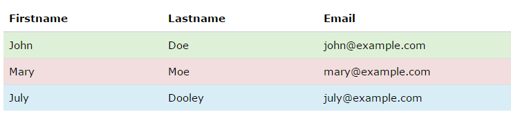

بوت استرپ 4 از فونت 16px به صورت پیش فرض استفاده می کند. در ادامه برخی از تایپوگرافی های بوت استرپ مشاهده میشوند.:
| # | نام | کاربرد |
|---|---|---|
| 1 | .font-weight-bold | Bold text |
| 2 | .text-center | Indicates center-aligned text |
.text-primary
.text-secondary
.text-success
.text-danger
.text-warning
.text-info
.text-light
.text-dark
.text-muted
.text-white
یک جدول پایه در بوت استرپ دارای مقداری padding و خط های تقسیم کننده ی افقی می باشد. کلاس table استایل های مقدماتی را به جدوال اضافه می کند:
بوت استرپ هفت نوع دکمه را به ما ارائه می دهد: